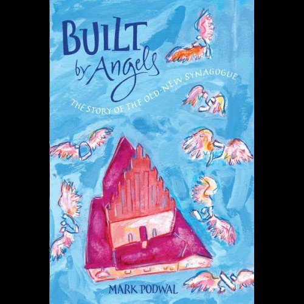

BUY direct from our distributor "This poignant evocation moves the viewer to appreciate a very special memory." "You’ve enriched the world with ‘House of Life.’ Watching it was a sad but ennobling pleasure. It’s one of the most meaningful documentaries I know." "I was mesmerized by the documentary House Of Life: The Old Jewish Cemetery in Prague...This film is a revelation, the next best thing to going to Prague and seeing the cemetery itself."
|
 |
Click to BUY THE children's book Built by angels: The story of the old-new synagogue
"A beautiful, Impressionistic introduction to a portion of Judaic lore and a European architectural marvel." "I've never seen Prague in such luminous colors... Prague with wings... flying, floating, reaching the sky. The simple fact is that it is a glorious book." "With words of simple wisdom and luminous art... Podwal himself has made the inanimate come to life in a delightful book of meaning and charm."
|